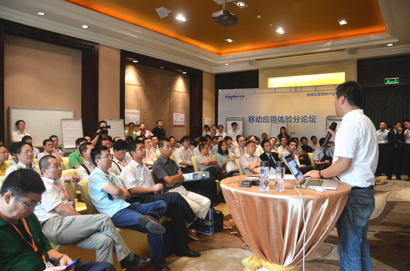
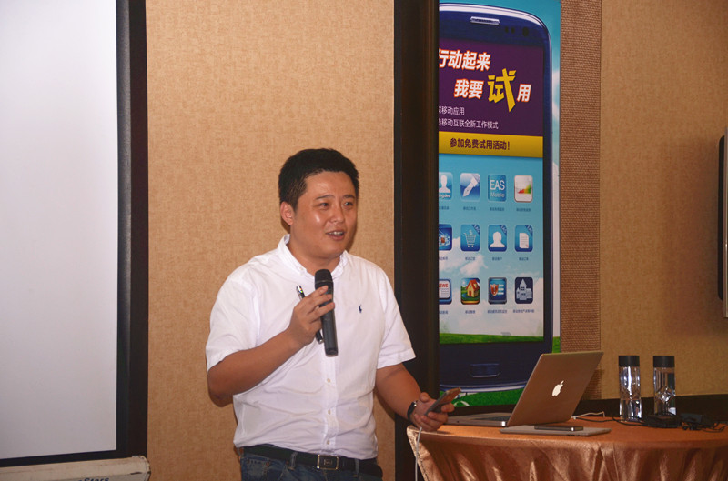

| 金蝶新闻 | |
|
|


8月8日，金蝶成立19周年纪念日。在这个吉利的日子里，“金蝶云管理新产品发布会”在其总部深圳盛大召开。值得关注的是，在市场上好评率颇高的金蝶移动应用，也在本次发布会上推出新产品，将发布会推向了又一个高潮。

金蝶云管理新产品发布会“移动应用体验”分论坛现场
在中国，企业应用软件ERP，从启蒙到流行，经历了漫长的30年，但企业移动应用却只用了3年的时间就得到了业界的追捧。一方面，这是移动互联、云计算等新一代信息技术对企业应用软件的变革起到了催化作用；另一方面，则是企业对移动应用的客观需求在爆发式增长。
在本次发布会的“移动应用体验”分论坛上，金蝶中国助理总裁隋同建一开场便将来宾们引入企业移动应用的未来世界中：突破时空的局限，突破IT资源的局限，最大化利用零散的时间和空闲的资源；8小时内外，办公室内外，你可以随时随地审批工作流程，随时随地搜索客户、同事联系方式，随时随地监控财务数据和信息系统，随时随地获取智能分析报告，随时随地快速决策……金蝶移动应用简洁的人机界面和人性化的操作方式，激发了来宾们强烈的兴趣，来宾们纷纷结合自身企业的情况，向隋同建，以及金蝶BOS首席架构师宋凯提问，求解企业移动应用的实施细节和金蝶移动解决方案。

金蝶中国助理总裁隋同建带领来宾一同体验金蝶移动应用最新产品
作为发布会的一大重头戏，金蝶移动应用最新产品，包括企业移动门户、移动订货、房地产移动售楼等正式亮相。其中，企业移动门户正是金蝶聆听客户需求，专为企业个人用户开发的个性化门户产品，通过它个人用户可以快速发现、装载、登录被公司授予权限的移动应用，此外这个移动门户还具备智能推送新闻、公告上企业内网的实用功能。亲身体验金蝶此次推出的新产品后，必须承认，金蝶在提升企业移动应用的用户体验上是不遗余力，想必这也是金蝶移动应用已然赢得业内200 多家重点客户青睐的原因。
“移动应用创意圆桌”是本次发布会设置的一个独具匠心的环节。来宾们被分成小组，从而能更好地交流、互动、与分享。在小组长的引导下，每位来宾都分享了各自企业对移动应用的现实需求、应用规划、以及未来设想。不断的思维碰撞，激发了小组成员对移动应用更全面、更深入的思考，创意的火花时有闪现。会议主办方金蝶也从讨论中汲取了很多颇有见地的想法。
2012年是金蝶的“云管理”战略年，移动应用正是金蝶“云管理”战略的三大支柱之一。据隋同建透露，接下来，金蝶将会推出移动应用产品的免费试用活动，只要企业在金蝶官网上提交试用申请，金蝶实施服务顾问就会提供上门服务，帮助企业部署移动应用终端程序，并开通为期一个月的移动应用试用权限，“这个免费的午餐值得所有企业一试。”